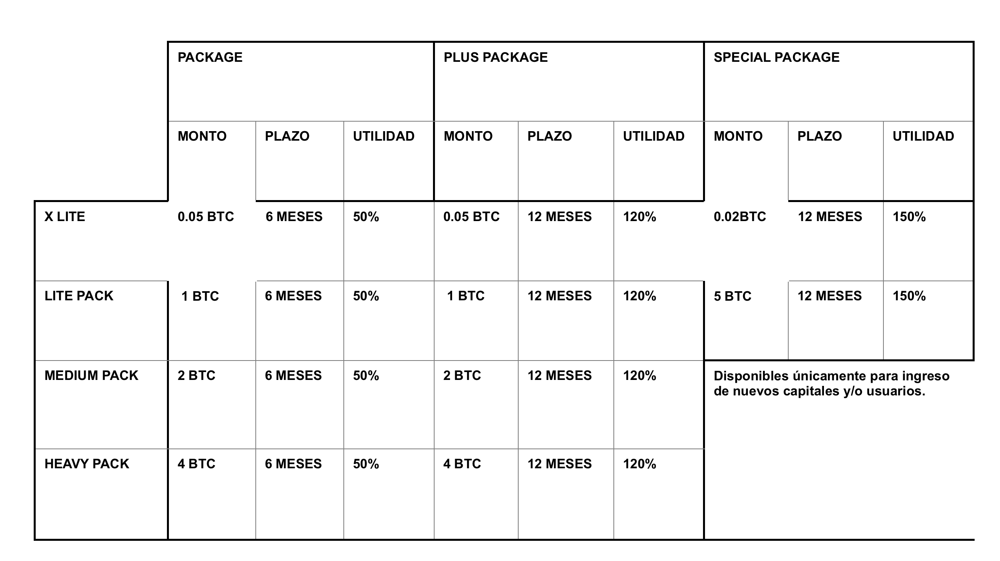
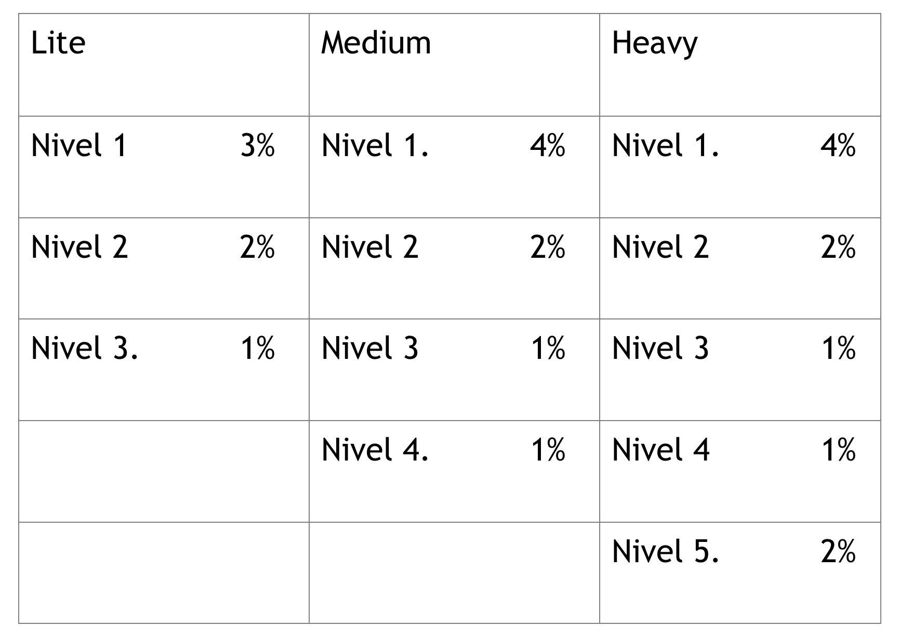
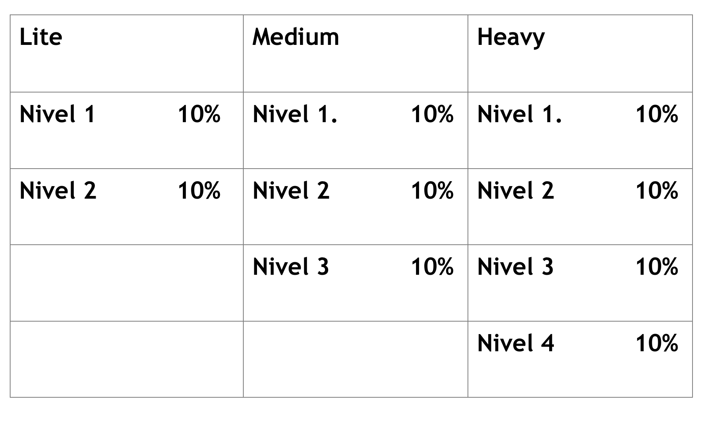

Legales
El siguiente documento establece las obligaciones y derechos que se aplican entre Usted el Cliente y Global Coin; por lo tanto, le solicitamos lo lea detenida y cuidadosamente, observando y analizando los servicios que le proporcionaremos, y si hay algo de lo cual que usted no entienda o no esté de acuerdo, por favor abstenerse de usar nuestros servicios.
Estos Términos y Condiciones son los acuerdos de la asociación entre la empresa GLOBAL COIN y el CLIENTE, donde se establecen los términos legales y condiciones que rigen el uso de este sitio y / o uso de cualquier producto o servicio que ofrece GLOBAL COIN; además, proporciona información sobre cómo convertirse en un cliente de nuestra compañía.
La utilización de la Plataforma GLOBALCOIN.CO y toda la información, datos, texto, software, información, imágenes, sonidos u otros materiales contenidos en el mismo, o el uso o la adquisición de cualquiera de los productos de GLOBALCOIN.CO adquiridos por el cliente, confirma su acuerdo incondicional a estar obligado por los términos de dicho Acuerdo y está sujeto al cumplimiento continuo con los términos y condiciones de este Acuerdo. Si el Cliente no está de acuerdo con estos términos y condiciones, no está obligado a ellos y por tanto no acceda a utilizar el Sitio o comprar cualquiera nuestros productos.
Si el cliente no está satisfecho con el sitio, los productos y servicios proporcionados; su opción única y exclusiva es dejar de usar el sitio, los servicios o productos que ofrecemos, a excepción de las garantías limitadas que pueden aplicarse a los productos del cliente que están en proceso en GLOBAL COIN.
Las inversiones en criptomonedas no son adecuadas para todos los inversores. Este es un mercado muy volátil y fluctuante, donde el cliente debe ser consciente de todos los factores que influyen sobre ellas.
Usted como cliente, debe leer y comprender el Riesgo general. Divulgación que también forma parte de estos Términos y Condiciones.
Estos términos y condiciones serán modificados cuando sea pertinente, para generar sostenibilidad a la empresa y a sus clientes.
En el presente documento nos referiremos a Global Coin como "Nosotros", "nos", "nuestros" o "GC" y a usted como “Cliente” o “Usuario”.
Global Coin es una compañía de responsabilidad limitada constituida en Gilmer Terrace. Wellingo, 6100, Nueva Zelanda.
El uso de los servicios está sujeto a estos Términos y Condiciones. Si tiene alguna objeción de ellos, no utilice nuestros servicios. Su acceso y uso de los servicios constituye su aceptación de los Términos y Condiciones y cualquier otro aviso legal o declaración. Su uso de los Servicios se rige por la versión de los Términos y Condiciones vigentes en la fecha de cada servicio. Usted es responsable de revisar esta página en nuestro sitio web y aplicaciones periódicamente para verificar la versión actual de los términos y condiciones. No dude en ponerse en contacto con nuestro equipo de atención al cliente en soporte en la página https://GlobalCOIN.CO/ para cualquier aclaración antes de usar o continuar usando cualquier Servicio.
Usted reconoce y acepta que al hacer clic en el botón "Acepto" o en los botones o enlaces similares que puedan haber designados por GLOBAL COIN, usted da su aprobación de los términos y condiciones. Usted está ingresando legalmente a un contrato de carácter vinculante. Usted acepta el uso de la comunicación electrónica para realizar registros, anexo de documentos, realización y solicitud de pagos. Además, Usted renuncia a cualquier derecho o requisito bajo cualquier ley o regulación en cualquier jurisdicción que requiera una firma original (no electrónica) o la entrega o retención de registros no electrónicos, en la medida en que lo permita la ley obligatoria aplicable.
La información y los recursos incluidos en el Sitio estarán sujetos a cambios en cualquier momento sin previo aviso. Al acceder o conectarse a este sitio (en la medida en que la conexión es permisible), el Cliente asume el riesgo de que la información en este sitio puede ser cambiado o retirado posteriormente.
Estos Términos y condiciones se publicaron y se actualizaron por última vez el 28 de febrero de 2019. Debe imprimir una copia de estos términos y condiciones para sus referencias.
NOTA IMPORTANTE: GLOBAL COIN SOLO ACEPTA USUARIOS EN MEXICO. (RESIDENTES Y CIUDADANOS), NO ACEPTA USUARIOS EN PAISES COMO CHINA, REPÚBLICA DEMOCRÁTICA POPULAR DE COREA (RPDC), IRÁN, CUBA, ALBANIA, SERBIA, SUDÁN, O SIRIA.
SI ESTÁ VIAJANDO A ALGUNO DE ESTOS PAÍSES, RECONOCE QUE NUESTROS SERVICIOS PUEDEN NO ESTAR DISPONIBLES Y / O BLOQUEADOS EN TALES PAISES.
GLOBAL COIN SE RESERVA EL DERECHO DE IMPONER REQUISITOS O CONDICIONES ADICIONALES ANTES DE ACEPTAR A LOS USUARIOS QUE RESIDEN EN O DESDE PAISES ESPECÍFICOS. GLOBAL COIN GUARDA DISCRECIÓN ANTE ESTO.
1. ACUERDO DEL CLIENTE
Este documento le describe detalladamente los términos y condiciones que debe aceptar sin restricciones ni objeciones si desea utilizar nuestros servicios.
Antes de convertirse en cliente de GLOBAL COIN y de utilizar nuestros servicios, usted debe comprender y aceptar todos los términos y condiciones expresamente explicados y / o implícitos en este documento. Usted confirma que ha leído estos términos y condiciones y que ha aceptado sin condiciones y sin reservas los términos y condiciones en su totalidad.
El presente texto contiene todas las condiciones esenciales del Acuerdo entre Global CoinLtd, o por sus siglas en ingles GLOBAL COIN y el Usuario.
Este texto representa entonces una oferta pública, entiéndase que dicha oferta ha sido aceptada si El Usuario sigue las instrucciones que se indican a continuación:
• Familiarizarse con las condiciones del presente Acuerdo y todos sus complementos.
• Proporcionar información real, incluyendo la requerida en la autenticación de inicio de sesión, correo electrónico y contraseña; seguir las políticas básicas de KYC (Conoce a tu Cliente, por sus siglas en inglés); y brindar información de pago verídica.
• Activar a través de un clic la casilla de “Acepto las condiciones del Acuerdo” contenida en el formulario de registro.
• Dar clic en el botón Continuar luego de completar el formulario de registro.
• Después de que El Usuario haga clic en el botón Continuar y aparezca el mensaje informando sobre el registro exitoso, el proceso de registro se considerará terminado y las condiciones del presente acuerdo serán de carácter obligatorio para la persona registrada.
¡Atención! Si no estás de acuerdo con las condiciones del presente Acuerdo, no te registres en el sitio web https://GlobalCOIN.CO y no utilices sus servicios.
Nota: GLOBAL COIN, Global Coin, surge debido a la necesidad de ofrecer en los mercados de riesgo emergentes un rostro que proporcione confianza y un servicio transparente para poder realizar una gestión de riesgo correcta, brindando un marco seguro para consultar o adquirir un servicio tercerizado de rentas. Como Prestador de Servicios, GLOBAL COIN se compromete a comunicarse en el idioma oficial al país al que ofrece el servicio.
2. TÉRMINOS Y DEFINICIONES
Datos de usuario: Datos de usuario necesarios para acceder y utilizar el sistema: nombre de usuario, contraseña, correo electrónico y otros datos indicados durante el proceso de registro, así como después de él.
Herramientas operativas: Criptomonedas como el Bitcoin (BTC) y paquetes ofertados en la plataforma web.
Criptomoneda: Moneda digital que no tiene emisor central y que se distribuye directamente entre los propietarios de la misma.
Tipo de Cambio: Relación entre el precio de Oferta de los servicios de GLOBAL COIN y la aceptación de la oferta por aporte del usuario o cliente.
Oficina Virtual: Conjunto de páginas protegidas creadas como resultado del registro del Usuario en el Sistema, con el que el Usuario puede realizar órdenes para la ejecución adicional de Ofertas, así como instruir las comisiones de Proveedor de Servicio estipuladas por el presente Acuerdo.
La oficina virtual refleja información sobre pedidos colocados y cancelados, ofertas cerradas, fondos disponibles y / o Cripto-monedas y otra información estipulada por las funciones del Sitio.
Política de privacidad: GLOBAL COIN recolecta, salvaguarda, todos los datos personales y operativos del cliente y/o usuario que considere pertinentes para la seguridad de las partes que celebran el acuerdo, también se compromete a tratar su información personal de forma legal, diligente y cuidadosa.
Política de lucha contra el blanqueo de capitales: La empresa cumple con el Programa de prevención del blanqueo de dinero derivado de la actividad delictiva y la financiación del terrorismo, que constituye una parte esencial del acuerdo y sin perjuicio de previo aviso la empresa se reserva el derecho a terminar este acuerdo, siendo propiedad de la empresa, toda información intercambiada o proporcionada entre el Usuario y la Empresa y el congelamiento tanto de activos como de fondos hasta esclarecer con las autoridades que gobiernan y regulan a la empresa la disputa con el usuario o cliente.
Infracción de propiedad intelectual: Conjunto de informaciones, textos, elementos gráficos y de diseño, imágenes, foto, vídeo y otros frutos de la actividad intelectual, así como conjunto de programas informáticos contenidos en el sistema operativo y materiales promocionales externos al sitio https://GlobalCOIN.CO son exclusiva propiedad de la empresa.
Sistema: Conjunto de software y medios técnicos utilizados por el Proveedor de Servicios en modo automático para procesar las operaciones realizadas por el Usuario en su oficina virtual.
Acuerdo: El presente Contrato de Usuario.
Partes: El Proveedor de Servicios (GLOBAL COIN) y el Usuario (Cliente).
Cuenta: Parte funcional del Sistema que controla las Herramientas del Usuario y las operaciones realizadas con ellos.
Tarifas y/o costes operativos: Información sobre las tarifas del proveedor de servicios y los precios de los servicios adicionales prestados por el proveedor de servicios constantemente disponibles en el sitio web de la empresa.
Balance: Este se refiere a el saldo en criptomonedas que usted tiene dentro de la plataforma.
3. OBJETO DEL ACUERDO:
El Proveedor de Servicios otorga al Usuario acceso al Sitio y la posibilidad de utilizar el Sistema, así como presta otros servicios siguiendo el orden y en las condiciones estipuladas por el Acuerdo.
El Usuario se compromete a utilizar el Sitio y el Sistema de acuerdo con las condiciones del Acuerdo, así como a pagar los servicios del proveedor GLOBAL COIN en los casos contemplados por los representantes de la empresa y otros acuerdos celebrados entre las partes. Las partes esenciales del presente Acuerdo son Política de Privacidad, Política Anti-Lavado de Dinero, Tarifas y la Oferta.
4. MODIFICACIONES:
GLOBAL COIN se reserva el derecho en cualquier momento a:
• Modificar o los términos y condiciones de este Acuerdo.
• Extender, añadir, modificar o suspender el Sitio u otros productos, o cualquier parte del Sitio o de otros productos o servicios, en cualquier momento y a nuestra discreción.
Nos reservamos periódicamente el derecho, a nuestra sola discreción, de modificar, actualizar, añadir, suspender, remover, revisar o modificar cualquier parte de este Acuerdo, en todo o en parte, en cualquier momento. Para las modificaciones a este Acuerdo que GLOBAL COIN considere el material, vamos a publicar un aviso en el sitio revisando el enlace en https://GlobalCOIN.CO para ser leído sustancialmente como "Actualización de los Términos de uso" por un período de tiempo razonable.
Si el Cliente accede a utilizar el Sitio o participar en cualquier oferta de cualquier manera después de que este Acuerdo ha sido modificado, se considera que el usuario ha leído, entendido y aceptado incondicionalmente y acordado a tales modificaciones. La versión más actualizada de este Acuerdo estará disponible en el sitio y reemplazará todas las versiones anteriores de este Acuerdo sin previo aviso.
El sitio o los productos, en su totalidad o en parte, pueden ampliarse, modificarse o suspenderse en nuestra única discreción. Cualquier ampliaciones, adiciones o modificaciones en el Sitio o los productos estarán sujetos a este Acuerdo.
5. ACCESO AL SISTEMA, PROCESO DE REGISTRO Y USO DEL CHAT:
El Proveedor de Servicios otorga al Usuario acceso a la información sobre el Sistema y las opciones de los paquetes ofrecidos con sus debidos requisitos.
Para acceder al Sistema, el Usuario debe completar el proceso de registro.
Es El Usuario quien establece la contraseña durante el proceso de registro. El Usuario puede cambiar su contraseña en cualquier momento después de completar el proceso de registro. El Usuario se compromete a salvaguardar la contraseña y los datos de la cuenta de usuario de terceras personas y es el que determina la mejor manera de guardar estos datos y tomar medidas para evitar que se desacredite.
En caso de pérdida o desacreditación de la contraseña y/o de los Datos de la Cuenta de Usuario, así como en los casos en que terceras personas obtengan acceso ilegal a la oficina virtual del Usuario, el Usuario deberá informar al Proveedor de Servicio contactando al equipo de soporte técnico de GLOBAL COIN.
Hasta que el Proveedor de Servicios reciba el mensaje correspondiente, todas las acciones realizadas desde la oficina virtual del Usuario serán consideradas como realizadas por el Usuario adecuado.
El mismo Usuario no puede utilizar dos o más oficinas virtuales y tales acciones serán consideradas como la violación del Acuerdo.
Cuando el Usuario obtiene acceso al Chat, se prohíbe:
1) Insultar y amenazar a otros usuarios, así como a nuestro personal, es una violación directa de esta cláusula, y puede resultar en una prohibición permanente del usuario.
2) Utilizar cualquier forma de lenguaje obsceno.
3) Hacer declaraciones que lleven a disensiones internacionales, contengan propaganda de violencia u ofendan sentimientos religiosos de otros Usuarios.
4) Enviar cualquier tipo de enlaces externos.
5) Mensajes de texto en mayúsculas.
6) ser redundante en la repetición de la misma información o la misma frase.
7) Apelar a comprar o vender cualquier producto de la empresa o la asesoría a representantes u otros usuarios.
8) Anunciar productos o servicios de otras empresas.
9) Inundaciones, spam y discutir temas que no conciernen a la criptografía o al intercambio.
10) Proporcionar información falsa o engañosa sobre la operativa.
11) El uso de la consola de desarrollo de los navegadores dentro del sistema va en contra de los términos y condiciones que acepta el usuario. El uso indebido de esta repercutirá en procesos legales y la suspensión completa de tu cuenta.
6. CUENTA GLOBAL COIN.
Después del registro en el Sistema, el Usuario obtiene acceso a su cuenta para su oficina virtual. El Usuario puede acceder a los distintos paquetes y/o productos ofertados utilizando su oficina virtual.
El Proveedor de Servicios proporcionará en las oficinas virtuales de los clientes, la información necesaria para la reposición de la cuenta y para el retiro de fondos. Para redimir las utilidades en crypto-monedas (bitcoin), se establecerá un pedido previo a la mesa operativa. Este pedido puede tardar entre 10 a 15 días hábiles en ser aprobado.
En el retiro de utilidades y comisiones, el usuario proporcionara la dirección de billetera virtual y el verificara que quede bien registrada en la oficina virtual, la cual debe estar a nombre del cliente. El Usuario es el responsable del mal registro de la billetera virtual.
Es el Usuario quien paga las comisiones y por los servicios relacionados con la transferencia, así como asume los riesgos de indicar los detalles de dirección de billetera electrónica incorrectos o correctos.
El proveedor de servicios se compromete a recibir los elementos de Cryptomonedas (Bitcoin) de los usuarios, mantenerlos, soportar un registro de ellos, realizar transacciones y proporcionar a los usuarios toda la información sobre sus paquetes adquiridos.
El Proveedor de Servicios mantiene un registro de los fondos transferidos a la cuenta.
Para transferir Cryptomonedas (Bitcoin) entre usuarios, deberá elevar una solicitud a nuestra plataforma por vía de nuestro chat, nos reservamos el derecho a decidir bajo qué condición y como se procede con estas transferencias en el momento que queramos.
El Proveedor de Servicios no es responsable de las acciones de estos intercambios, diferencias bruscas de precio, cotización y volatilidad de mercado subyacente.
Todas las operaciones de la Cuenta se realizan a petición del Usuario.
El Proveedor de Servicios no acepta órdenes sobre la realización de ninguna operación con la Cuenta de Usuario de terceros, salvo que se estipule lo contrario en el acuerdo u otros acuerdos entre las Partes.
El Proveedor de Servicios no puede bloquear operaciones de transacción de criptomonedas (Bitcoin) en la Cuenta hacia la billetera sin anunciarlo al Usuario, a no ser que se presente un fraude por parte del Usuario.
Para retirar utilidades de la Cuenta, el usuario debe llenar el formulario correspondiente en su oficina virtual. El Usuario recibirá un mensaje a la dirección de correo electrónico indicada durante el proceso de registro pidiendo confirmar o negar la operación de retirada.
En caso de que el Usuario niegue o no confirme el retiro, las Herramientas permanecerán en la Cuenta.
El sistema establece algunas restricciones para las retiradas de fondos:
El Usuario no puede retirar fondos durante 3 (tres) días después de cambiar los Datos de Cuenta de Usuario (al cambiar o restaurar contraseña, y también al cambiar el método de autorización).
Cualquier acción fraudulenta conlleva a la inmediata congelación de activos y la disputa se resolverá como se detalla en este acuerdo.
7. PREVENCIÓN DEL USO ILEGAL DE SITIOS Y SISTEMAS.
Se prohíbe al Usuario la realización de operaciones omitiendo el procedimiento formal de adquisición de paquetes mediante el uso de mensajes personales y otras posibilidades del Sitio y / o del Sistema.
Se prohíbe al Usuario utilizar el Sitio y / o el Sistema de cualquier otra forma que no sea la estipulada en el Acuerdo; en particular, el Usuario no está autorizado a anunciar productos en el Sitio en caso de que las Partes no hayan suscrito un acuerdo específico adicional.
Se prohíbe al Usuario utilizar el Sitio y / o el Sistema con fines ilegales, como el lavado de dinero derivado de actividades delictivas, el financiamiento del terrorismo y la participación en actividades extremistas.
Usuario está obligado a pasar por el proceso de identificación establecido por el Sistema o por terceros (agregado-res, crédito u otros órganos) durante el proceso de negociación, así como cumplir los requisitos estipulados por la legislación que regula a la empresa.
8. ADVERTENCIA DE RIESGO.
El Usuario garantiza que entiende los principios generales del trabajo con Cryptomonedas, es consciente de las características del mercado de Cryptomonedas y los factores que afectan su valor.
El Usuario garantiza que tiene la posibilidad de realizar transacciones con Cryptomonedas, que es totalmente capaz bajo la ley o jurisdicción donde reside, siendo responsabilidad del mismo las acciones, inversiones que tome operando dentro de la empresa.
El Usuario entiende que el proveedor de servicios refleja en el Sitio la tasa de Cambio sobre la base de la cual se realizan las ofertas y que es determinada por la empresa y los proveedores de liquidez.
El proveedor de servicios no influye de ninguna manera en el tipo de cambio establecido por el mercado, no da recomendaciones sobre la determinación del tipo de cambio y no prevee las tasas.
Es el Usuario quien asume todos los riesgos económicos relacionados con la elección de este o aquel tipo de cambio.
El Proveedor de Servicios no garantiza que el contrato se cerrará definitivamente y que las condiciones de este contrato serán de beneficio del Usuario.
El usuario entiende que el proveedor de servicio no tiene relación alguna con la conducción de la transacción y / o las transacciones relacionadas con cryptomonedas correspondientemente, el Proveedor de Servicios no asume la responsabilidad de garantizar términos y / o posibilidades de llevar a cabo esta o aquella operación y / o transacción relacionada con cryptomonedas, que son necesarias para la realización del acuerdo.
El Usuario entiende que todas las operaciones con cryptomonedas tienen carácter irreversible y solo pueden ser devueltas con base a un acuerdo específico adicional con otro usuario o la propia empresa.
La cancelación de la cuenta antes del tiempo establecido entre las partes, puede resultar en multas o cobros, por parte del Usuario.
GLOBAL COIN ¨la empresa¨ provee varios servicios a través de agentes tercerizados, bajo ningún motivo, circunstancia o carácter la empresa realiza recomendaciones financieras ni promete utilidades al usuario, los resultados expresados como rentas fijas, refieren al porcentaje que un determinado operador/trader, ajeno al control de la empresa, compromete a salvaguardar para el cliente, en caso de utilidades positivas.
9. PROPIEDAD INTELECTUAL Y RESTRICCIONES EN EL USO DEL SITIO Y DEL SISTEMA.
El sitio y el Sistema contienen frutos del trabajo intelectual que pertenecen al proveedor de Servicios, afiliados y otras partes relacionadas, patrocinadores, socios, representantes, todas las partes que actúan en nombre del Proveedor de Servicios y otros terceros.
Al utilizar el sitio y el sistema, el usuario reconoce y acepta que todo el contenido del sitio y su estructura del contenido están protegidos por derechos de autor, marcas registradas y otros derechos relativos a los frutos de la actividad intelectual y que los derechos mencionados son auténticos y están protegidos en todas las formas, en todas las jurisdicciones y con respecto a todas las tecnologías existentes y creadas posteriores.
Ningún derecho ni ningún contenido del sitio ni del sistema están comprometidos con el usuario como resultado del uso del sitio y del Sistema o en la celebración del acuerdo.
Para evitar cualquier malentendido, se prohíbe al usuario:
Copiar y / o difundir cualquier elemento de propiedad intelectual publicado en el sitio y / o en el Sistema, excepto cuando esta función esté claramente contemplada por el Sitio y / o el Sistema.
Copiar o utilizar de cualquier otra forma la parte del programa del Sitio y / o del Sistema, así como su diseño.
Difundir en el Sitio y / o en el Sistema datos personales de terceros sin su permiso.
Cambiar de cualquier manera la parte del programa del sitio y / o del sistema, tomar cualquier acción dirigida a cambiar la funcionalidad y operatividad del sitio y / o del sistema.
Usar insultos o cualquier palabra que viole derechos y libertades de terceras personas como un login (apodo, alias) durante el registro.
10. RESPONSABILIDADES DE LAS PARTES.
En caso de que el usuario viole las condiciones del presente acuerdo, las normas de moralidad o en caso de que conspire con otro usuario para violar las condiciones del Contrato, el proveedor de servicio tendrá el derecho de bloquear o eliminar la oficina virtual del usuario, prohíbe o restringe su acceso a ciertas o todas las funciones del Sistema usando su oficina virtual.
Si el Proveedor de Servicios detecta que el Usuario ha violado el numeral 7 del presente Contrato, el Proveedor de Servicios tendrá derecho a eliminar la oficina virtual del usuario y exigir indemnización por pérdidas.
El Proveedor de servicios no es responsable de la operatividad del Sitio y / o del Sistema y no garantiza su funcionamiento continuo.
El Usuario utiliza el Sitio y el Sistema en su forma original bajo su propio riesgo.
El Proveedor de Servicios no garantiza el logro de ningún resultado por parte del usuario debido al uso del Sitio y / o del Sistema.
El proveedor de servicios no garantiza que el sitio y el sistema cumplan los requisitos del Usuario y no garantizan un acceso continuo, rápido, seguro y sin errores al Sitio y / o al Sistema.
11. CONDICIONES ESPECIALES.
El sitio y el sistema pueden contener enlaces externos a otros sitios de la red de internet (sitios de terceros).
Los sitios de los terceros mencionados y su contenido no son controlados por criterios de conformidad con determinados requisitos (autenticidad, integridad, legalidad, etc.).
El proveedor de servicios no será responsable por la información y los materiales publicados en los sitios de terceros, a los que el usuario pueda acceder a través del sitio y / o el sistema, así como no asume ninguna responsabilidad por las opiniones expresadas o declaraciones, la accesibilidad y las posibles consecuencias del uso de sitios de terceros.
El Proveedor de Servicios tiene el derecho de transferir derechos y deudas bajo todas las obligaciones derivadas del acuerdo.
Al aceptar el presente acuerdo, el usuario da su consentimiento para transferir derechos y deudas a terceros.
En caso de transferencia de derechos y / o deudas, el proveedor de servicios informará al usuario de la misma dejando el mensaje correspondiente en el Sitio y / o en el Sistema.
Dada la especificidad de las transacciones, el Servicio no implementa una política de reintegro.
Al realizar una transacción en cryptomonedas, el usuario acepta y asume todo el riesgo de la transacción.
12. SOLUCIÓN DE DISPUTAS.
Las partes tendrán que resolver todas las controversias, diferencias y pretensiones que puedan surgir de la ejecución, terminación o cancelación del acuerdo mediante negociaciones.
La parte que tiene reclamos debe enviar una notificación a la otra Parte describiendo las reclamaciones surgidas y / o diferencias.
Si la parte solicitante no obtiene respuesta en un plazo de 30 (treinta) días desde que se haya remitido el mensaje correspondiente o en caso de que las partes no puedan llegar a un consenso, la controversia estará sujeta a resolución en un tribunal donde el Proveedor de servicios reside y por donde es regulado.
13. ENMIENDAS AL ACUERDO.
La empresa tiene el derecho de modificar unilateralmente los términos del acuerdo, la política de privacidad, la Política contra el lavado de dinero, las tarifas y la oferta de determinados activos.
Los cambios surten efecto 3 (tres) días después de la publicación de la nueva versión de los documentos correspondientes.
En cada visita sucesiva al Sitio y antes de iniciar el uso de la oficina virtual, el Usuario se compromete a familiarizarse con la nueva versión del acuerdo, política de privacidad, política anti-lavado de dinero, tarifas y la oferta general.
14. GARANTÍA.
La garantía de los productos y servicios de GLOBAL COIN será responsabilidad de sus fabricantes y proveedores. Esta garantía está limitada únicamente por los términos de ciertas garantías específicas, agregados o empaquetadas con ciertos productos y no se aplica a los productos intencionalmente dañados o mal empleados.
15. ERRORES.
Si bien trabajamos constantemente para mantener la integridad del sitio y de otros productos, no se ofrece ninguna garantía en cuanto a la exactitud o integridad del Sitio o de otros productos. Si usted cree que ha descubierto un error en el Sitio u otros productos, póngase en contacto con nosotros en soporte en la página https://GlobalCOIN.CO/ , si es posible, una descripción del error, su ubicación en la URL, y su información de contacto. En GLOBAL COIN haremos todos los esfuerzos razonables para hacer frente a sus preocupaciones.
16. PROMOCIONES.
Este sitio puede contener campañas, concursos u otras promociones que requieren que el usuario envié un material o cualquier información sobre él. Tenga en cuenta que las campañas, ofertas, concursos o promociones ofrecidos a través de este sitio son gobernadas por un conjunto de normas o instrucciones, que describen el tipo de campaña, competencia, concurso o promoción.
En ellos se encuentran los requisitos de elegibilidad, como la edad, área geográfica, cumplimiento de los términos y condiciones, capital invertido, tipo de cuenta.
Es responsabilidad del usuario leer estas reglas e instrucciones de participación.
17. DISPOSICIONES FINALES.
El proveedor de servicios y todas las relaciones jurídicas que lo conciernen están reguladas por la legislación correspondiente.
Todas las disputas surgidas se resuelven de acuerdo con la legislación de la empresa.
Si alguna cláusula del acuerdo se considera nula e inaplicable por decisión judicial, no afectará la validez de otras cláusulas del acuerdo, las cuales seguirán siendo válidas y ejecutables.
En el caso de la operativa con cryptomonedas (Bitcoin), la detección de cualquier origen fraudulento conllevara a la congelación de la oficina virtual de operaciones del usuario.
18. BILLETERA VIRTUAL.
Usted es responsable de registrar de forma cuidadosa y minuciosa la dirección de su billetera virtual, recuerde que después de la primera configuración deberá comunicarse con el área de soporte y hacer su solicitud.
Tenga en cuenta que esto es de suma relevancia, pues si usted ingresa una dirección que no es la de su billetera virtual, podría perder las criptomonedas que solicitó retirar del sistema.
19. TRANSFERENCIA DE FONDOS.
Es el proceso por medio del cual usted transfiere sus fondos dentro de nuestra plataforma a otros usuarios de la misma. Este proceso tiene un costo del 7% del capital transferido, actualmente tiene un valor máximo de transferencia de 1.5 BTC por usuario.
Recuerde que transferencia de fondos es diferente de retiro de fondos.
20. MODELO DE NEGOCIO.
Uninivel
Es una estructura de inversión que genera rentabilidades en estructura horizontal que maneja tres tipos de paquetes de inversión, ofreciendo una diferente rentabilidad mensual dependiendo del capital invertido y el plazo del paquete.
El Uninivel sugiere crecimiento horizontal dentro de la organización. Ej.
Jhon recibe unas ganancias por invitar a usuarios directos, y a su vez recibe ganancias de los usuarios invitados por sus directos.
Matching Bonus es un modelo de inversión que genera rentabilidades en su estructura de forma horizontal y piramidal que maneja tres tipos de paquetes de inversión, ofreciendo una diferente rentabilidad mensual dependiendo del capital invertido y el plazo del paquete.Ej.
Jhon apoya a Laura a tener un equipo de personas en Global Coin, Laura genera ganancias en el uninivel, por lo tanto, Jhon genera ganancias de las ganancias de Laura.
Nos reservamos el derecho de bloquear y anular las cuentas de aquellos que hagan uso inadecuado de la plataforma o divulguen información falsa relacionada con las inversiones, tales como comisiones, porcentajes de rendimiento, tiempos de entrega en retornos, entre otros.
Paquetes disponibles en GLOBAL COIN

20.1.Pago de Comisiones en la Red de negocios
El sistema de pago de comisiones en la red de negocios está formado por 10 niveles, este pago se realiza de la siguiente forma:
Niveles generación de comisiones Uninivel

Niveles plan de comisiones Matching Bonus

21. CONTRATOS.
Un contrato en GLOBAL COIN, es cuando el cliente invierte en uno de los productos, el cual tiene un tiempo de durabilidad de 6 meses o 1 año. En ese plazo el cliente recibirá una rentabilidad mensual de su dinero que dependerá del monto de inversión y el tipo de cuenta que tenga.
22.MANEJO DE SU SALDO EN LA PLATAFORMA
Cuando inviertes en nuestra página GLOBAL COIN y transfieres tus criptomonedas desde tu billetera virtual a la página, estas criptomonedas van a una cartera llamada Saldo o balance.
PENALIZACIONES
Después de que el usuario haya realizado la inversión en GLOBAL COIN y haya elegido un producto, donde sus BTC están en la sección de CAPITAL BASE y desea retirarse completamente de la compañía, sin cumplir el año del contrato. El usuario tiene una penalización y se realizara de la siguiente forma:
En el primer cumplido mes del 60% del capital invertido.
• El segundo mes de 50% del capital invertido.
• El tercer mes del 40% del capital invertido.
• El cuarto mes del 30% del capital invertido.
• El quinto mes en adelante hasta cumplir el año el 15%.
• Después de cumplir el año ya no hay penalización.
23.TASAS DE HONORARIOS GLOBAL COIN
• Tarifas transaccionales 7%.
• Depósito 0% para sistema.
• Tasa de retiro 5% (retiro entre 10 a 15 días hábiles).
Ejemplo ilustrativo 1: Si un usuario desea sacar sus utilidades en menos de 5 días hábiles, entonces se le cobra el 17% de retiro anticipado más 5% de comisión de retiro.
Ejemplo ilustrativo 2: Si el usuario desea acabar con su contrato en el cuarto mes, según el numeral 23, al usuario se le cobra el 30%. Y si además lo quiere anticipado, se le cobra un 17% más.